例子
假设有如下形状的网格, 请求解其对应的系数矩阵

区域(1)的面积是,
$$
S_{1}=1\times 2/2=1
\tag{32}
$$
然后有\(R_1\)为,
$$
\mathbf{R_{1}}=\begin{pmatrix}
1&0&0\\ 1&2&0.5\\ 1&0&1
\end{pmatrix}
\tag{33}
$$
于是有,
$$
\mathbf{T_{1}}=\begin{pmatrix}
1.0625&-0.1250&-0.9375\\ -0.1250&0.2500&-0.1250\\ -0.9375&-0.1250&1.0625
\end{pmatrix}
\tag{34}
$$
用同样的方法处理区域(2),
$$
\mathbf{R_{2}}=\begin{pmatrix}
1&2&0.5\\ 1&2&1\\ 1&0&1
\end{pmatrix}
\tag{35}
$$
$$
\mathbf{T_{2}}=\begin{pmatrix}
4.0000&-4.0000&0\\ -4.0000&4.2500&-0.2500\\ 0&-0.2500&0.2500
\end{pmatrix}
\tag{36}
$$
(面积是\(S_2=1/2\))
于是全局的系数矩阵是,
$$
\mathbf{C}=\begin{pmatrix}
1.0625&-0.1250&0&-0.9375\\\
-0.1250&2.2500&-2.0000&-0.1250\\ 0&-2.0000&2.1250&-0.1250\\ -0.9375&-0.1250&-0.1250&1.1875
\end{pmatrix}
\tag{37}
$$